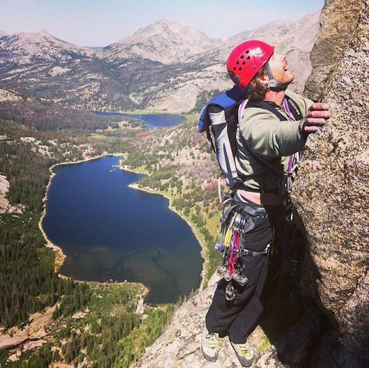
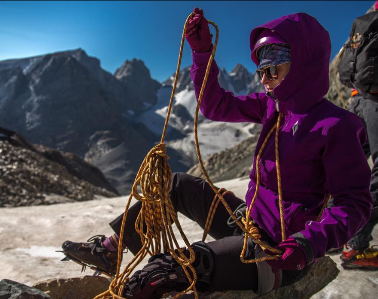
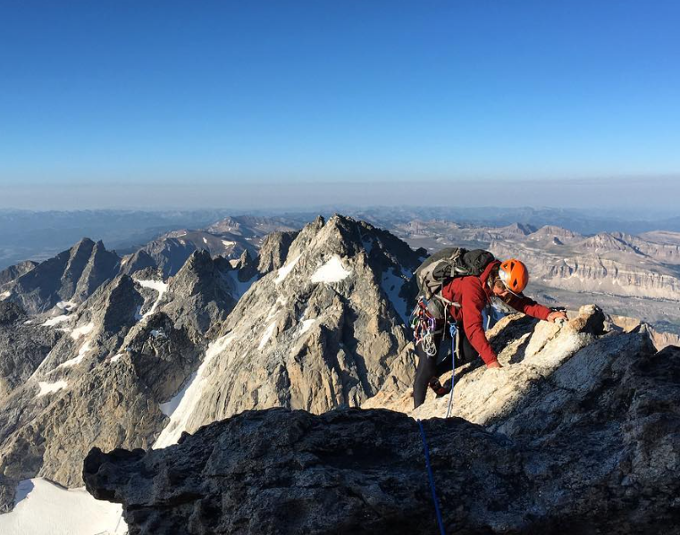

Rock Climbing: A Journey of Connection and Exploration
Alpine Climbing
- Alpine climbing is a demanding discipline of mountaineering that involves ascending high-altitude, often remote, and rugged peaks.
- Alpine climbing necessitates strong bonds between climbers due to the demanding and unpredictable nature of high-altitude expeditions
- Emphasizing the critical importance of teamwork, trust, and effective communication.
- Alpine climbers embark on challenging journeys through remote and often untouched landscapes, fostering a deep connection with nature and a profound sense of exploration as they navigate through snow-covered peaks, glaciers, and breathtaking vistas.



Previous | Climbing Gear